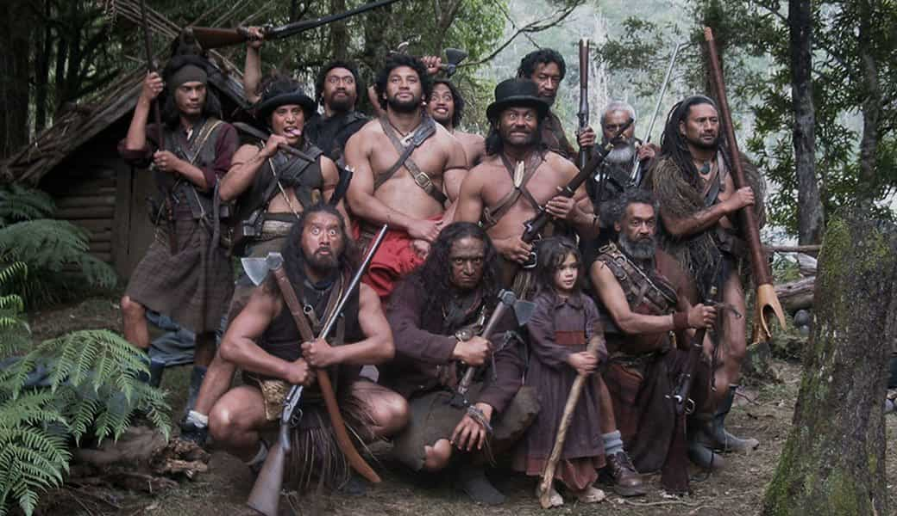
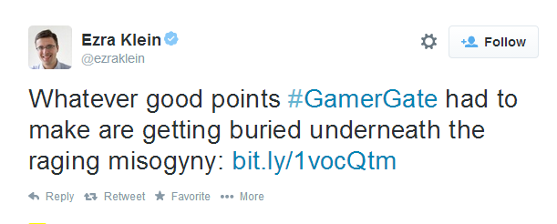
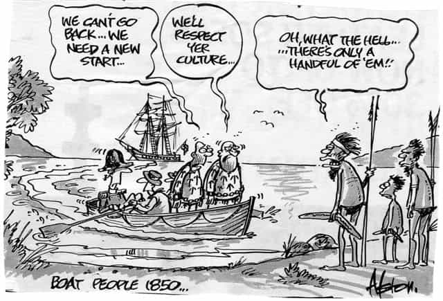

< < < Back
5 Reasons You Shouldn’t Feel Guilty About European Colonialism – Return Of Kings
With Australia Day come and gone, I found myself getting into many an argument with people on Facebook about the very thing we celebrate every year (and take a very welcomed day off work because of). For those of you who do not know, Australia Day celebrates the anniversary of the 1788 arrival of the first fleet of British ships on its shores. There would be no issue with this, if the country wasn’t already populated with native Aboriginal Australians who had their own culture, spirituality, and customs that took a massive shock with the arrival of white settlers.
This, along with a myriad of controversial actions often involving bloodshed, created a dichotomy of people (and Facebook friends). One side, feverish with national pride, the other, obsessed with the crimes of the past, mainly of Western culture’s influence on the native populace and the “theft” of their land.
This latter group has replaced Australia day with phrases such as “Invasion Day” and “Survival Day,” and we have seen similar movements in the United States and Britain for analogous holidays. Are they valid in their evaluation? I mean, how can you deny that there was once an area of land with people already living in it, that other people settled into and overwhelmed, often using force to push their own beliefs and culture onto?
The answer is you cannot—there are, however, certain truths that these groups conveniently gloss over which paint a much more balanced and realistic view of the situation.
1. If it were not for the British, it was only a matter of time before someone else “invaded” Australia

Colonization was the name of the game back in that day. Almost all powerful nations were doing it to some extent, the most notable players being the Dutch, Spanish, Portuguese, Britain, and France. If the British did not colonize Australia, it was simply a matter of time before someone else did. Yes, it is possible that life could have been better for the Aboriginal people under a different rule, but it’s also quite possible life would have been significantly worse.
It’s something we will never know, but one thing we can be certain of is that sooner or later, someone was going to lay claim to that land and the lacking technological development of the native culture sealed their destiny. Furthermore, colonizing wasn’t exclusively a “white” people thing to do, as you can see in the photo above.
2. Aboriginal people practiced “colonization” too
They simply lacked the technology to be as effective as the evil Westerners. When the people who protest these holidays look at native cultures, they do it with rose-colored glasses. Some go as far to ignore well documented facts like the Inca’s taste for blood and sacrifice, or Native American’s slavery practices. Others accept some bloodshed between the different tribes, but cite their relatively small scale as evidence of how horrible the English were compared to the mostly peace loving, native clans.
The reality is that “colonization” and bloodshed was not held back among native tribes because of lack of will, but simply the lack of technology to do so. Around Australia it is demonstrated well by the “Musket Wars” where Mauri (Native tribes from New Zealand) exchanged Muskets for goods from settlers and proceeded to “colonize” the land of the tribes next to them, causing massive casualties and sometimes whipping out whole tribes completely.
What made Australian Aboriginals more placid was not only their lack of killing efficiency, but also their harsh environment. While clashes among tribes occurred, even minor losses of strong hunting males could mean the destruction of tribes on both sides of the conflict.
3. Lack of development created cultural practices that were far from ideal

Lack of food and technological advances led to some less than desirable practices. Cannibalism is well documented among native cultures around the world. Australian Aboriginals were not exempt. In cases of extreme disparity, a practice of population control was utilized where a newborn baby was placed on a rock and had their head bashed in. The original pro-choice option.
While we can make an excuse for such things as harsh necessities, we can safely say that after 2000 or so years in Australia and having the largest technological claim to fame being a stick that returns back to you, that without an injection of Western farming techniques, those practices would most likely have continued for hundreds if not thousands of years more. How many lives would have been claimed if their island was simply forgotten and allowed to continue untouched by Western hands?
4. Australian Aboriginals were complete misogynists

And not in the airy-faerie way this term is used today. Australian Aboriginals literally saw women as property, to be traded, beaten, or raped on a whim. These are traditional practices that echo in the Aboriginal treatment of women today. Bess Nungarrayi Price, an Aboriginal activist, truthfully said that
…individual human rights are a Western invention. And that there are many rich and educated white people who would rather Aboriginal people lived with daily violence, poverty and ignorance in order to maintain their idea of what Aboriginal culture should be.
This inconvenient, debated, but very well documented truth is one of the best arguments for a Westernised Australia. Particularly because the group that reaches for the blinders when it comes to Native cultures is composed mostly of leftists and feminists. Native Australians had a real rape culture, a culture that quickly expresses itself in rural communities where parents of children will often feel safer when their kids are locked up in a white fella’s prison.
Arranged marriages, beatings, sex and rape of minors are common practice when Aboriginals are left to their own devices. On one hand, these are simply traditions, the way things were done before the white man came. Bleeding heart leftists scream for something to be done when another 12-year-old girl gets beaten and raped by a relative, yet refuse to acknowledge what makes this scenario a common occurrence, and viciously attack anyone stating some semblance of truth.
For more information about the topics covered, here are some videos and articles I recommend to get you started:
But even if after doing ample research on the topic you cannot see anything positive what so ever from the British “invasion” of Australia, there is one lesson from history you should take on board and apply in our current time.
5. Aboriginal culture was overrun because they lacked the ability to control their borders and property rights

The English, in essence, were just another clan whose culture shadowed that of the current one. Currently, Europe is being flooded with “refugees.” A clan of people who hold different cultural practices to those in the land mass that they are traveling to. The impact of this cultural “invasion” will be determined by the size and the intensity of the population.
If Aboriginal Australians had the ability to control their borders, they could still allow for white settlers, but only letting in so many as to adopt their way of life. Using common sense and lacking political correctness, they would have noted that a refugee from a certain region, such as natives from New Zealand, would more readily adapt to their culture. Hence, they could select which cultures to allow in larger numbers, and which would need more time to acclimatize themselves.
The West has this ability to protect its borders, yet lacks the blessing of the elites to implement this control. Hence, for better or for worse its culture will be challenged as was the Aboriginal. Will the current Western culture change for better or worse with the impact it faces? To guess, one must view both sides without rose covered glasses or the deep seated self-hatred of anything white or Western perpetuated by the political left.
Read More: Why The Native Peoples In Australia Were Doomed